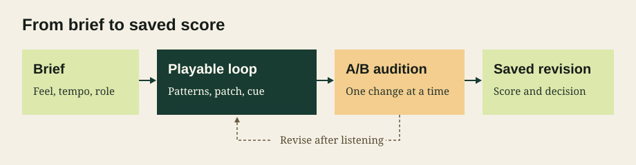

Test 1 · Triangle keys
A short, filtered triangle chord answers the rolling bass. Its dotted-eighth repeats carry across the gaps.
A Strudel production notebook for building grooves, shaping synths, and hearing what a single change does to the track.
Explore the test projectsKick and offbeat hats from bar 1. Snare enters at bar 9.
Compare the triangle and FM chord voices in Between the Steps. Both tests run for six minutes at 122 BPM. Open either score and press Play in Strudel.
A short, filtered triangle chord answers the rolling bass. Its dotted-eighth repeats carry across the gaps.
The same chord rhythm and voicing through a sine carrier with FM. Compare the attack and how the repeats sit against the hats.
Find a section while playing. Set cueBar near the top of either file and click Update in Strudel. Try 33 for the first chords, 89 for the break, 97 for the full groove, or 161 for the outro.
You can also download a score and paste its contents into the Strudel editor.
Play each preset on its own, then transplant the voice into a project. Each file includes its oscillator or sample, envelope, and mix settings.
Short gate and a two-bar answer leave space for the kick.
A slow low-pass sweep and a dedicated echo orbit shape the stab.
A short modulation envelope shapes the attack on the same preset chord.
Three closed-hat samples, small timing offsets, and varying gates.
Give the agent a baseline score, a musical role, and a timestamp or bar. Ask for one playable change and audition the same passage in both versions.
.strudel file beside its baseline.